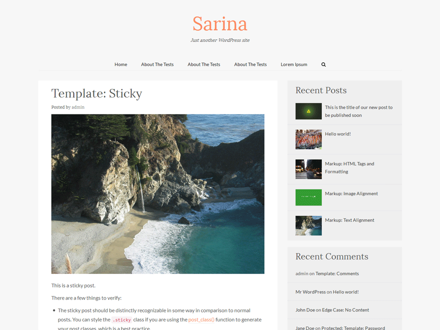

Sarina is a personal blog theme with a responsive layout. Sarina is based on Bootstrap and _s starter theme. It comes with a recent posts widget with thumbnails.
Features
Google fonts
Sarina uses google fonts to enhance typography.
Bootstrap
Built on bootstrap 3.3.5 framework which makes the theme compatible with all the devices.
Underscores
Underscores starter theme ensures that best coding standards are being used for theme development.